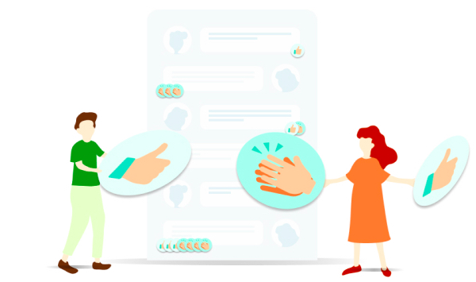
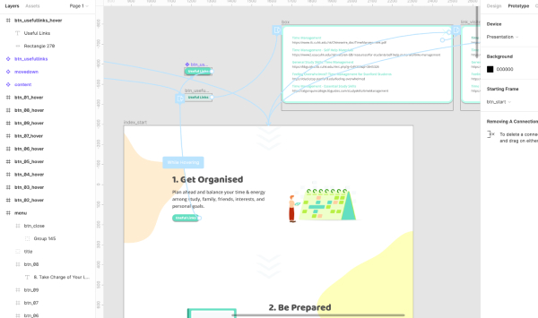
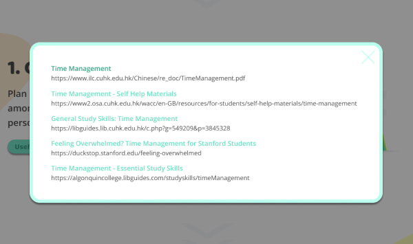

Online Learning Resource
UX UI Design
Front-end Web Development
Illustration
Prototype
Independent Learning Center, the Chinese University of Hong Kong
The outbreak of COVID-19 influence everyone in different ways. Schools are closed and classrooms have moved online. Along with the increase in usage of online learning, the Chinese University of Hong Kong has establish a website about netiquette and how students can learn effectively during the time, consisting of 8 points and useful links.
Visit WebsiteIn the design process, I have chosen a colour theme that is dynamic and soothing the emotion of people during the epidemic. In addition, illustration is tailor-designed for the 8 points and CUHK, combining human figure, stationaries and computer elements.

A hi-fi prototype is made for getting feedbacks. And the useful links is presented in a pop up modal, visited links are shown in different colour as a reminder for users, indicating pages that users have visited.


Users can also use it as a note reminding themselves about the learning tips. Therefore, responsive website design is adopted in this project. People could visit the website easily whether they are using computer or mobile. This opportunity is treasurable because I could apply the knowledge about user experience and interface design to it, and assist students in the learning process. The website has finally published in different places for supporting online learning and with good feedbacks.